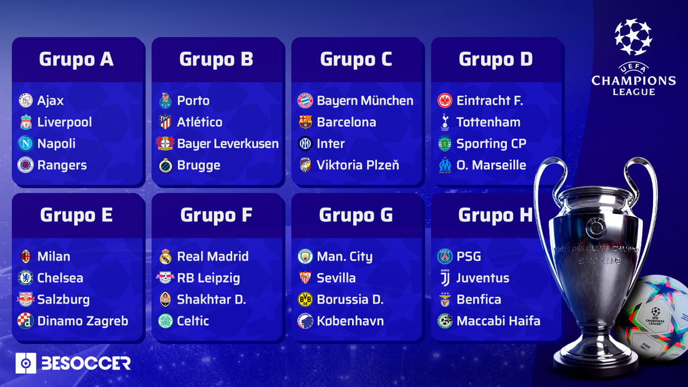
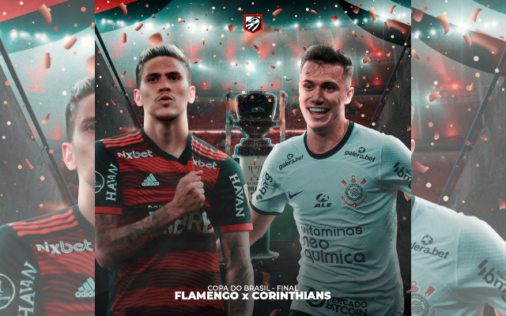
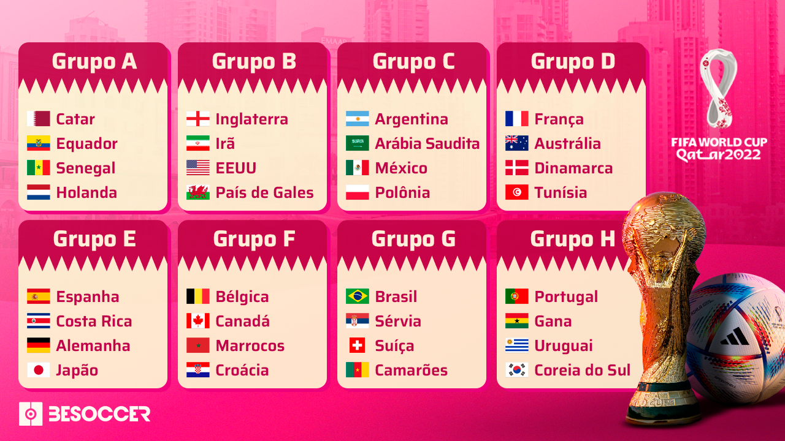

25 de Setembro, 2022
Sorteio da Champions 2022/23
A Uefa (União das Federações Europeias de Futebol) sorteou nesta quinta-feira (25), em Istambul, os grupos da edição 2022/23 da Champions League. O grande destaque é o grupo C, o "da morte", que juntou os gigantes Barcelona, Bayern de Munique e Inter de Milão. Outra chave interessante é a H, que conta com PSG, Juventus e Benfica.
Já o atual campeão Real Madrid saiu no grupo F, que, curiosamente, é o que mais teve vencedores de Champions ao longo da história. A fase de grupos da Liga dos Campeões está marcada para começar no dia 6 de setembro, com a 1ª rodada da competição. Já a grande final irá acontecer em 10 de junho de 2023, no Estádio Olímpico Atatürk, em Istambul, na Turquia.

16 de Setembro, 2022
Final da Copa do Brasil já tem data e hora!
A final da Copa do Brasil está definida! Corinthians e Flamengo disputam o Clássico das Multidões em partidas de ida e volta para saber quem será o grande campeão da edição de 2022. Os dois confrontos estão com data definida: dias 12 e 19 do mês de outubro, ambos em uma quarta-feira. Os horários e mandos de campo serão definidos na próxima terça-feira (20), via sorteio realizado pela CBF.
Além do icônico troféu, a equipe vencedora conquista a bolada de R$ 60 milhões, mais o dinheiro recebido até a final. O vice-campeão, por sua vez, recebe R$ 25 milhões. Na atual temporada, os dois clubes já protagonizaram duelo em competição de mata-mata. Pelas quartas de final da Libertadores, o Flamengo levou a melhor, superando o Corinthians com duas vitórias — 2 a 0 na ida e 1 a 0 na volta. Timão e Rubro-Negro também mediram forças no Brasileirão deste ano, pela 16ª rodada, na Neo Química Arena. Desta vez, a vitória foi corintiana, por 1 a 0. Se enfrentam novamente na 35ª rodada do campeonato, exatos dez dias após a decisão da Copa do Brasil.

16 de Setembro, 2022
Falta pouco!
Diferentemente das outras edições, a Copa do Mundo de 2022, que acontece no Qatar, será realizada entre os meses de novembro e dezembro. Até a abertura, serão nove semanas e, claro, os torcedores de todo o mundo estão ansiosos para a bola rolar na competição. Ao todo, 32 equipes estão divididas em oito grupos com quatro times em cada um destes. O Brasil está no Grupo G, ao lado de Sérvia, Suíça e Camarões, e busca o hexacampeonato sobre as seleções mais fortes do torneio, como França, Inglaterra e a rival continental, Argentina.
Hoje, 16 de setembro, faltam 65 dias para a abertura da Copa do Mundo de 2022. Até lá, serão menos de nove semanas para o grande dia de estreia da competição, que acontece em 20 de novembro, um domingo. A partida de abertura será entre o Qatar, país-sede, e o Equador, um dos representantes da América do Sul, às 13h (de Brasília). Vale lembrar que o jogo de abertura foi antecipado pela Fifa: antes, a partida iria acontecer no dia 21.